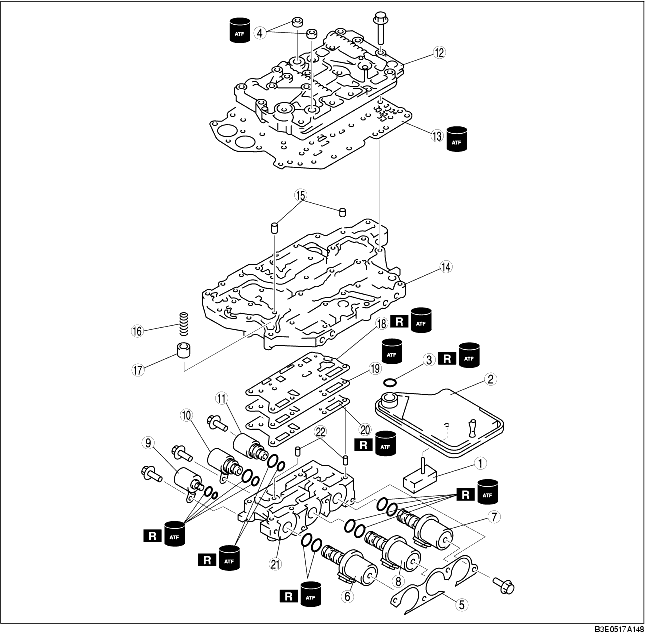

1. Die Zerlegung in der Reihenfolge der Tabelle durchführen.
2. Ausgebaute Teile nach Zugehörigkeit und Anordnung ablegen, um Verwechseln ähnlicher Teile zu vermeiden.
3. Die ausgebauten Teile mit Lösungsmittel reinigen und dann mit Pressluft trocknen. Alle Bohrungen und Passagen mit Pressluft reinigen.

1. Das Ölsieb ausbauen.
2. Den O-Ring om Ölsieb abziehen.
3. Dichtung entfernen.
4. Die Halterung ausbauen.
5. Magnetventil A, B, C ausbauen.
6. Das Hauptdruck-Magnetventil und Magnetventil D, E ausbauen.
7. Die Schrauben in der gezeigten Reihenfolge gleichmäßig lösen.
8. Den oberen Schaltkasten ausbauen.
9. Den Dichtringdeckel entfernen.
10. Den Hauptschaltkasten ausbauen.
11. Die Stifte, Feder des Modulationsdruckspeichers und Modulationsdruckspeicher aus dem Hauptschaltkasten entnehmen.
12. Dichtung D, Trennplatte und Dichtung C ausbauen.
13. Die Stifte entfernen.
1. Die Zerlegung in der Reihenfolge der Tabelle durchführen.
2. Alle Teile und Bohrungen direkt vor dem Einbau mit Pressluft reinigen und mit Automatikgetriebeöl schmieren.
3. Der Zusammenbau erfolgt in umgekehrter Reihenfolge der Zerlegung.
|
1
|
Handschaltventil
|
|
2
|
Haltescheibe
|
|
3
|
Feder, 1./Rückwärtsgang-Schaltventil
|
|
4
|
1./Rückwärtsgang-Schaltventil
|
|
5
|
Haltescheibe
|
|
6
|
Feder, Reduziermagnetventil
|
|
7
|
Reduziermagnetventil
|
1. Die ungespannte Länge der Feder messen.
2. Das Reduziermagnetventil samt Feder und Sitz einbauen.
3. Das 1./Rückwärtsgang-Schaltventil samt Feder und Sitz einbauen.
4. Das Handschaltventil einbauen.
1. Die Zerlegung in der Reihenfolge der Tabelle durchführen.
2. Alle Teile und Bohrungen direkt vor dem Einbau mit Pressluft reinigen und mit Automatikgetriebeöl schmieren.
3. Der Zusammenbau erfolgt in umgekehrter Reihenfolge der Zerlegung.

1. Die ungespannte Länge der Feder messen.
2. Das 3-4 Schaltventil samt Feder und Haltescheibe einbauen.
3. Bypass-Ventil samt Feder und Haltescheibe einbauen.
4. Das Wandlerkupplungsventil samt Feder und Haltescheibe einbauen.
5. Das Wandler-Überdruckventi samt Feder und Haltescheibe einbauen.
6. Das Schaltrmagnetventil samt Feder und Sitz einbauen.
7. Das Hauptdruck-Magnetventil samt Feder und Sitz einbauen.
1. Sicherstellen, dass alle Teile frei von Staub und Fremdkörpern sind.
2. Alle Teile mit Automatikgetriebeöl schmieren.
3. Der Zusammenbau erfolgt in umgekehrter Reihenfolge der Zerlegung.
1. Die Stifte in den Schaltkasten einsetzen.
2. Eine neue Dichtung C, die Trennplatte und eine neue Dichtung D auf den Schaltkasten legen.
3. Den Modulationsdruckspeicher samt Feder in den Hauptschaltkasten einsetzen.
Ungespannte Länge der Feder für den Modulationsdruckspeicher
|
Außendurchmesser
mm {in}
|
Ungespannte Länge
mm {in}
|
Anzahl der Windungen
|
Drahtstärke
mm {in}
|
|---|---|---|---|
|
11,0 {0,433}
|
23,0 {0,906}
|
6,6
|
1,5 {0,059}
|
4. Die Stifte in den Hauptschaltkasten einsetzen.
5. Den Hauptschaltkasten auf den Magnetventil-Schaltkasten setzen.
6. Die Dichtungsplatte auf den Hauptschaltkasten setzen.
7. Den oberen Schaltkasten auf den Hauptschaltkasten setzen.
8. Die abgebildeten Schrauben handfest anziehen. Jeder Schraubentyp ist auf dem Schraubenkopf mit einem anderen Buchstaben bezeichnet. Den Buchstaben der Schraube mit den Buchstaben neben den Montagebohrungen im Schaltkasten vergleichen.
Schraubenkennung
|
Erkennungsmarkierung
|
Länge (gemessen unterhalb des Kopfes) mm {in}
|
|---|---|
|
A
|
30 {1,181}
|
|
B
|
40 {1,575}
|
|
Ohne Markierung
|
60 {2,362}
|
9. Die Schrauben in der gezeigten Reihenfolge schrittweise festziehen.
10. Das Hauptdruck-Magnetventil und Magnetventil D, E einbauen.
11. Magnetventil A, B, C einbauen.
12. Die Haltestrebe einbauen.
13. Dichtung auftragen.
14. ATF auf einen neuen O-Ring auftragen und auf das Ölsieb legen.
15. Das Ölsieb auf den Hauptschaltkasten legen.